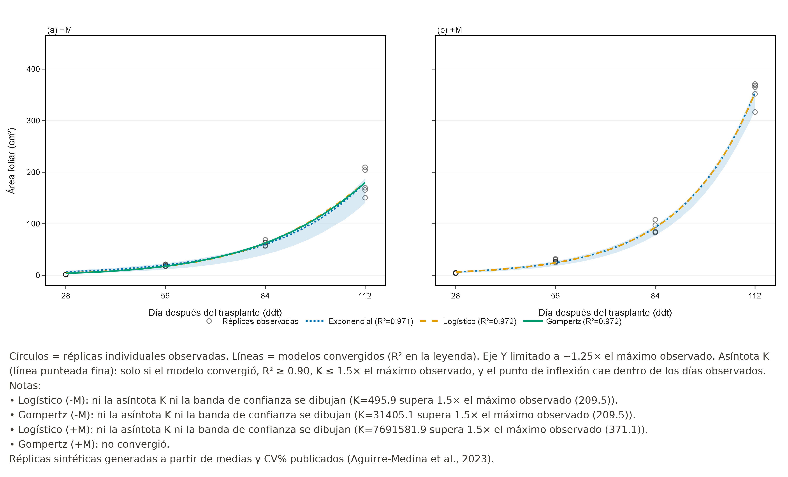
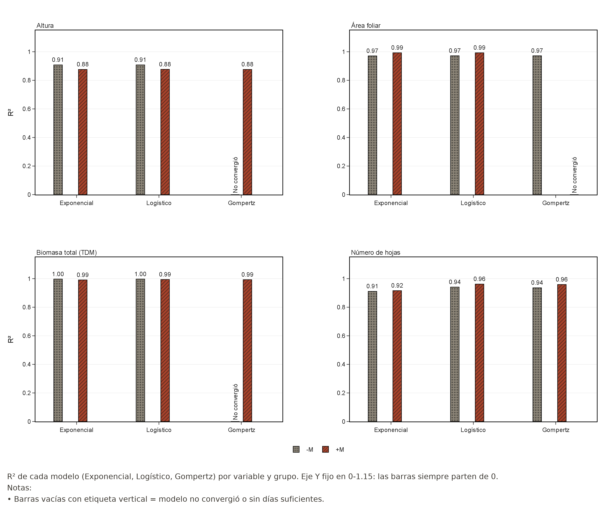

Le enseñamos a un programa a «dibujar» tres formas distintas de crecimiento de la planta de café, y luego usamos esas curvas para comparar plántulas con y sin hongos micorrízicos arbusculares (HMA) de forma más rigurosa que solo mirar una tabla de promedios.
Cuando se mide la altura o el área foliar de una plántula varias veces en el tiempo, los números por sí solos no dicen mucho sobre la forma en que la planta está creciendo. Existen fórmulas matemáticas clásicas — modelos de crecimiento — que describen distintos patrones: uno que no se detiene (Exponencial) y otros que se aceleran y luego se estabilizan (Logístico y Gompertz). Ajustar estas fórmulas a los datos reales permite comparar de forma más objetiva qué tanto un tratamiento cambia el patrón de crecimiento.
Construimos una herramienta computacional — la app Coffea IA — que toma datos de crecimiento de Coffea arabica: altura, área foliar, biomasa total y número de hojas, medidos a los 28, 56, 84 y 112 días después del trasplante. La app ajusta automáticamente los tres modelos a cada variable, para el grupo control sin inocular (−M) y el grupo inoculado con HMA (+M). Los datos base provienen del trabajo publicado por Aguirre-Medina et al. (2023) en la Revista Fitotecnia Mexicana.

El artículo original de Aguirre-Medina et al. reporta promedios y variabilidad por tratamiento y día, no mediciones planta por planta. Por eso la herramienta genera réplicas individuales sintéticas que reproducen esos promedios, para poder hacer las comparaciones estadísticas. Los resultados de significancia que siguen ilustran cómo funciona la metodología, y no deben leerse como una nueva evidencia experimental independiente del artículo original.
Con los cuatro momentos de muestreo disponibles, el ajuste de los modelos fue razonablemente bueno (R² entre 0.876 y 0.997 en los modelos que convergen), aunque Gompertz no logró ajustarse en algunos casos — esperable cuando solo se cuenta con 4 puntos de datos por grupo para un modelo de 3 parámetros.
Al comparar los grupos con y sin micorriza: el área foliar mostró el efecto más consistente, con diferencias estadísticamente significativas en los cuatro momentos de muestreo (hasta +97.1% a los 112 días); la biomasa total también mostró un efecto significativo en 3 de los 4 momentos, con incrementos de hasta 71.7% a los 112 días; la altura y el número de hojas mostraron diferencias en su mayoría no significativas con estos datos.

Estos resultados son consistentes con la idea de que la inoculación con HMA favorece particularmente el desarrollo foliar y la acumulación de biomasa en las primeras etapas de la plántula, más que la elongación del tallo. Sin embargo, y esto es clave: estos hallazgos vienen de un reanálisis metodológico de datos ya publicados, con réplicas sintéticas — no de un experimento nuevo en campo. La validación con un conjunto de datos experimentales independiente todavía está en curso.
App y código: github.com/0scar07/proyecto-coffea-hma
Aguirre-Medina, J. F.; Aguirre-Cadena, J. F.; Escobar-España, J. C.; López-González, J. L. (2023). Crecimiento de Coffea arabica L. cv Catimor biofertilizado con diversos aislamientos de hongos endomicorrízicos en vivero. Revista Fitotecnia Mexicana, 46(3), 273-281. DOI: 10.35196/rfm.2023.3.273